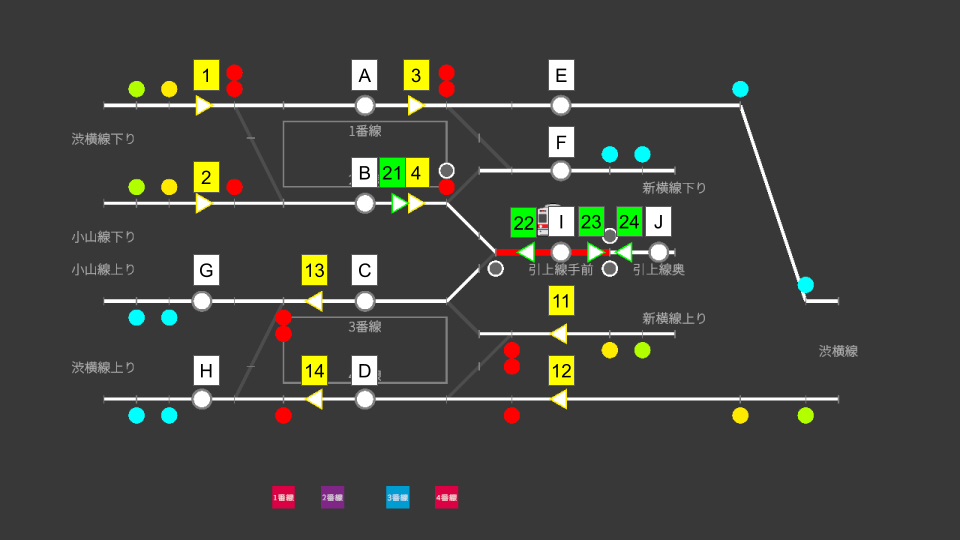

🎯 Map Overview
Daigakumae is a junction station where three directions of the Tokyo Kanagawa Express meet. Besides the Shibuyoko Line running straight through the station, the Shinyoko Line (with Sagami Express through services) branches off on the outbound side and the Koyama Line (with Subway through services) on the inbound side. The station also has two tail tracks, and the map's centerpiece is the turnaround flow where outbound Local trains become out-of-service moves, reverse on the tail tracks, and re-enter service as inbound Locals.
- Tracks: Tracks 1–4 (two island platforms). Tracks 1–2 outbound, Tracks 3–4 inbound
- Tail tracks: Two, arranged in series ("near" and "far")
- Directions: Shibuyoko Line outbound / Shibuyoko Line inbound / Shinyoko Line outbound / Koyama Line inbound
- Through services: Minato Line Through (Shibuyoko outbound), Sagami Express Through (Shinyoko), Subway Through (inbound)
- Classes: Local, Express, Commuter Ltd. Express, Ltd. Express (Daytime only, passing), Out of Service
🗺 Lever Layout

Use the diagram above to see how Start Levers, End Levers, tracks, and the tail tracks are arranged.
🔧 Route List
A route is defined by a Start Lever and an End Lever. Routes at Daigakumae come in two types: main line (yellow-bordered start levers) and shunting (green-bordered start levers).
Main Home Routes (arrivals)
| Route | Start → End | Purpose |
|---|---|---|
| 1A | 1 → A | Entry from the outbound main line into Track 1 |
| 1B | 1 → B | Entry from the outbound main line into Track 2 |
| 2B | 2 → B | Entry from the outbound main line into Track 2 (second home signal) |
| 11C | 11 → C | Entry from the inbound main line into Track 3 |
| 11D | 11 → D | Entry from the inbound main line into Track 4 |
| 12D | 12 → D | Entry from the inbound main line into Track 4 (second home signal) |
Main Starting Routes (departures)
From the same track, the End Lever decides which line the train leaves on. Always check the destination on the departure board.
| Route | Start → End | Purpose |
|---|---|---|
| 3E | 3 → E | Departure from Track 1 onto the Shibuyoko Line outbound (toward Minato Line through services) |
| 3F | 3 → F | Departure from Track 1 onto the Shinyoko Line outbound (toward Sagami Express through services) |
| 4F | 4 → F | Departure from Track 2 onto the Shinyoko Line outbound |
| 13G | 13 → G | Departure from Track 3 onto the Koyama Line inbound (toward Subway through services) |
| 13H | 13 → H | Departure from Track 3 onto the Shibuyoko Line inbound |
| 14H | 14 → H | Departure from Track 4 onto the Shibuyoko Line inbound |
Shunting Shunting Routes (tail-track moves)
Used for turnaround operations. Start levers light up green and pair with white-bordered shunting signals.
| Route | Start → End | Purpose |
|---|---|---|
| 21I | 21 → I | From Track 2 into the near tail track |
| 23J | 23 → J | From the near tail track forward into the far tail track |
| 24I | 24 → I | From the far tail track back to the near tail track |
| 22C | 22 → C | From the near tail track into Track 3 |
🔄 Turnaround Operation (Daigakumae's highlight)
At Daigakumae, an outbound Local arrives on Track 2, becomes an out-of-service move, reverses on the tail tracks, and departs from Track 3 as an inbound Local. One physical train changes its role four times along the way: outbound Local → out-of-service (into the tail track) → out-of-service (back out) → inbound Local.
🔍 Identify the Turnaround Trains
Along the turnaround, the train keeps its base number and gains the suffixes "_1", "_2", and "_3" in order. For example, in the Daytime scenario:
| Arrival (outbound Local) | Into tail track (OOS) | Back out (OOS) | Departure (inbound Local) |
|---|---|---|---|
| 4001 (Track 2) | 4001_1 | 4001_2 | 4001_3 (Track 3) |
🔢 Procedure
-
Receive the outbound Local on Track 2 (main line)
Open home route 1B with the yellow-bordered start lever and bring the turnaround train onto Track 2. On arrival it gains the "_1" suffix and becomes out of service.
-
Set the shunting route into the tail track
Open shunting route 21I (Track 2 → near tail track) with the green-bordered start lever, then press Track 2's departure button to send it off.
-
Move it deeper if needed
If the train will sit for a while, advance it with 23J into the far tail track to keep the near track free for the next turnaround. Use 24I to bring it back.
-
Set the return route to Track 3
Check the shunting time of the return move ("_2" suffix) on the departure board and open shunting route 22C (near tail track → Track 3). The train moves to Track 3 at the scheduled time.
-
Set the inbound departure route and send it off (main line)
On Track 3 the train becomes an inbound Local ("_3" suffix, e.g. 4001_3). Confirm its line, open 13G (Koyama Line) or 13H (Shibuyoko Line), and press Track 3's departure button.
⏱ Passing Ltd. Expresses (Daytime)
The Daytime scenario features Limited Expresses that pass through Daigakumae without stopping — outbound on Track 1, inbound on Track 4. While Locals handle passengers on Tracks 2 and 3, open the through-side routes (outbound: 1A and 3E, inbound: 12D and 14H) and let the Ltd. Express sail past. During the Morning and Evening Rush there are no passing trains — everything stops, including Commuter Ltd. Expresses.
⚠ Common Mistakes
① Departing onto the wrong line
Track 1 can depart onto the Shibuyoko Line (3E) or the Shinyoko Line (3F); Track 3 onto the Koyama Line (13G) or the Shibuyoko Line (13H). Picking the wrong route sends the train toward the wrong through destination. Always confirm the direction shown on the departure board.
② Managing tail-track capacity
During busy turnaround periods, use both tail tracks wisely — long-dwelling trains go to the far track, quick turnarounds wait on the near one. Otherwise the next turnaround train gets stuck on Track 2.
③ Mixing up main-line and shunting levers
Don't confuse the yellow-bordered (main line) and green-bordered (shunting) start levers. Every move in and out of the tail tracks uses the shunting levers.